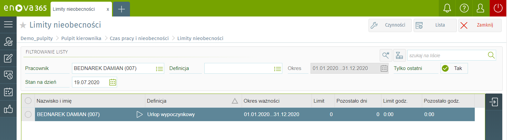
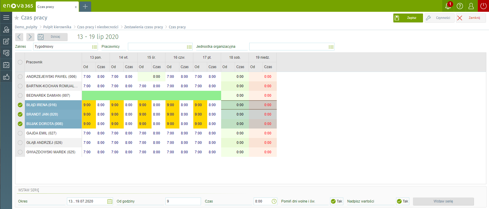

Czas pracy
Blok czasu pracy przedstawia miesięczną kartę czasu pracy kierownika i podległych mu pracowników w formie graficznej. Zapisany tutaj czas pracy porównywany jest z normą czasu pracy i na tej podstawie ustalana jest między innymi liczba nadgodzin. Dni,które zostały zmodyfikowane przez Użytkownika są oznaczone żółtym kolorem.

Norma czasu pracy
Blok norma czasu pracy przedstawia miesięczną kartę normy czasu pracy kierownika i podległych mu pracowników w formie graficznej. Dni, które zostały zmodyfikowane przez Użytkownika są oznaczone żółtym kolorem.
Aby wprowadzić zmiany klikamy dwukrotnie w interesujący nas dzień, następnie edytujemy pola i klikamy w prawym górnym rogu przycisk zapisz.
Limity nieobecności
Lista zawiera naliczone limity nieobecności dla pracowników.

Lista nieobecności
Lista nieobecności pozwala na przeglądanie wszystkich nieobecności w kontekście podległych kierownikowi pracowników. Jeżeli nieobecność została skorygowana wówczas w kolumnie Korygowana przy nieobecności zostanie zaznaczony znacznik i w okresie takiej nieobecności pojawi się adnotacja (pusty).
Planowane nieobecności
Funkcjonalność planowanych nieobecności dostępna jest w wersji platynowej modułu Kadry i płace.
Planowane nieobecności Jako Planowane nieobecności będą dostępne nieobecności, które w konfiguracji programu Narzędzia/Opcje/Kadry i płace/Kalendarze/Definicje nieobecności, na definicji mają zaznaczony parametr Definicja dostępna do wyboru na liście planowanych nieobecności na TAK.
Lista planowanych nieobecności Lista planowanych nieobecności pozwala na przeglądanie wszystkich planowanych nieobecności pracownika.
Dostępne filtry:
Definicja – słownik z wszystkimi dostępnymi nieobecnościami pracowniczymi,
Okres – okres, za który zostaną wyświetlone planowane nieobecności. W przypadku, gdy okres zapisywany jest przy pomocy pojedynczej kontrolki (w jednym polu) to może on zostać zapisany w formacie: „data…data”, na przykład: 2012-01-01…2012-12-31.

Zestawienie czasu pracy
Zestawienia czasu pracy można konfigurować w zależności od oczekiwań użytkownika.
Po wskazaniu w obrębie folderu Czas pracy i nieobecności wiersza Zestawienia czasu pracy w menu bocznym pojawiają się wczytane zestawienia czasu pracy do wyboru. Zaczytanie zestawienia czasu pracy do programu odbywa się poprzez zaimportowanie pliku o formacie xml (Plik/Importuj zapisy/Z pliku XML...). Po jednorazowym zaczytaniu zestawienia czasu pracy w konfiguracji inicjowana jest zakładka Definicje zestawień czasu (Narzędzia/Opcje/Kadry i Płace/Kalendarze). W przypadku jeżeli nie ma wczytanych zestawień czasu pracy zakładka Zestawienia czasu pracy w pulpicie kierownika nie jest możliwa do wyboru.

Edycja czasów pracy wielu pracowników
Aby edytować wiele pracowników jednocześnie na zakładce 'Czas pracy' zaznaczamy kilku pracowników.
Następnie na dole w sekcji 'Wstaw serię' określamy:
- Okres
- Od godziny
- Czas
- Pomiń dni wolne i św. (jeśli chcemy pominąć dni wolne i święta)
- Nadpisz wartości
i klikamy przycisk 'Wstaw serię'. Nasze zmiany powinny być widoczne jako pola o żółtym tle.
